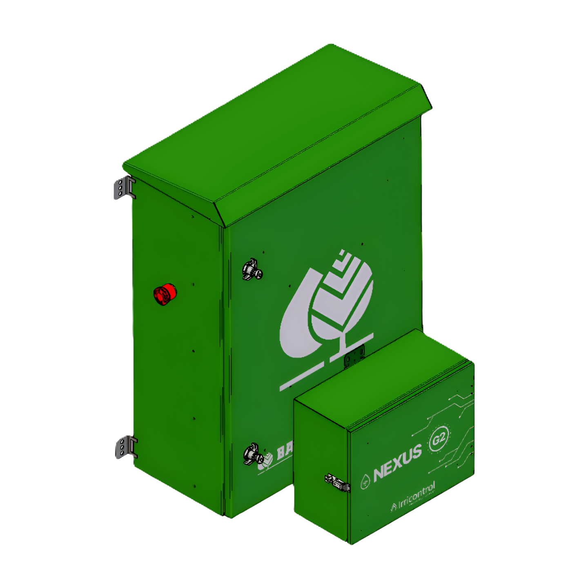
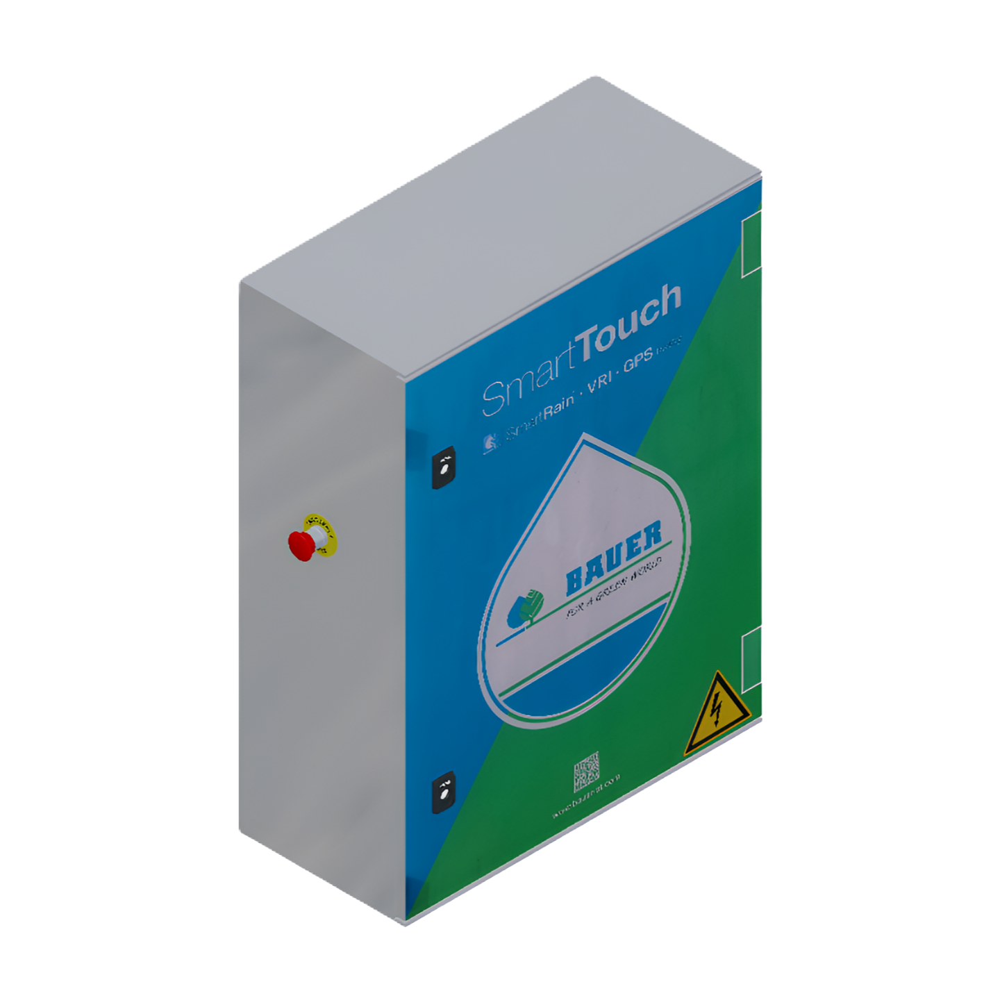
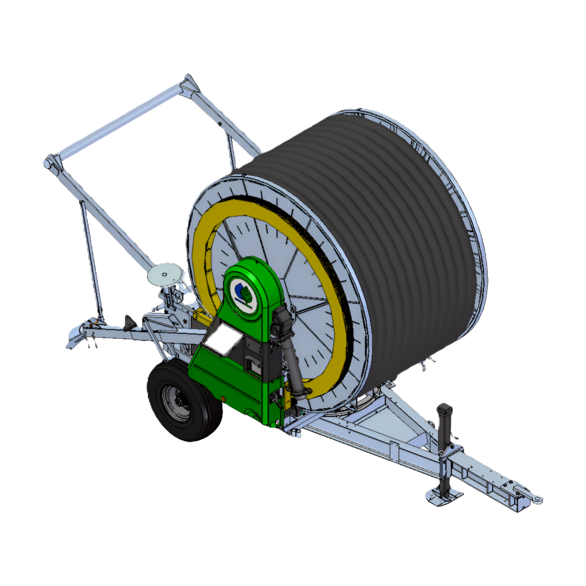
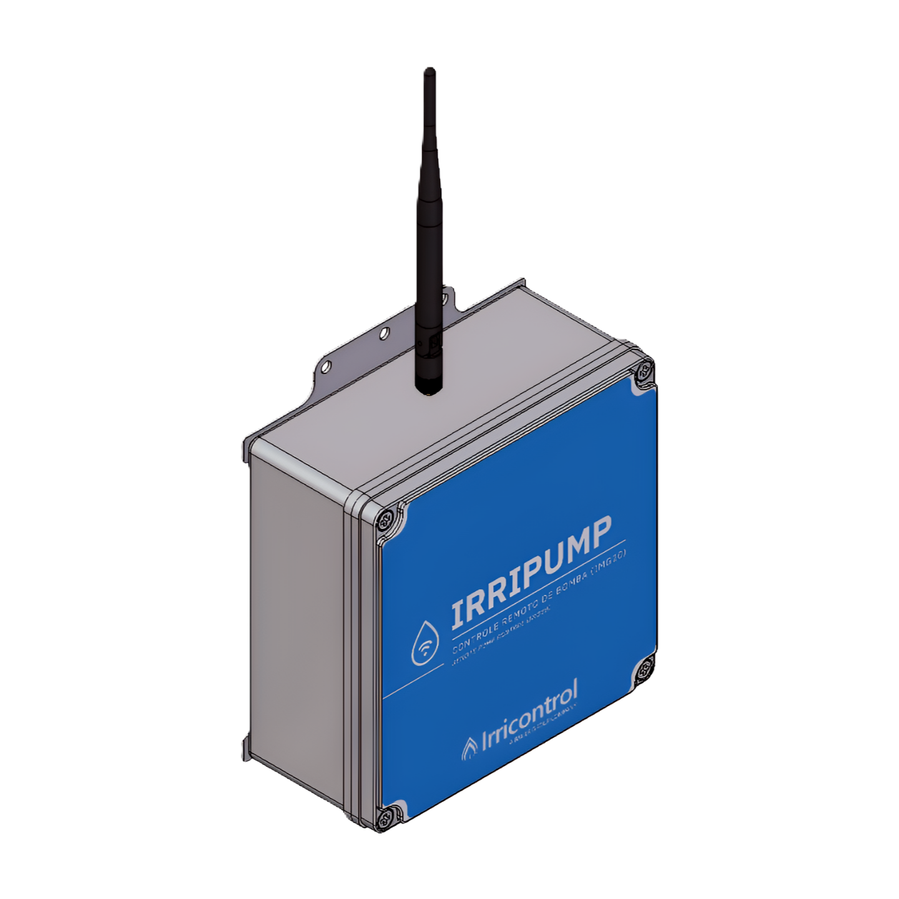
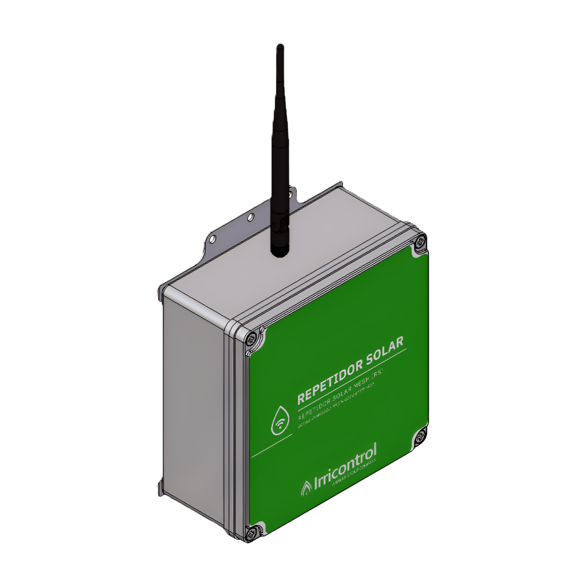
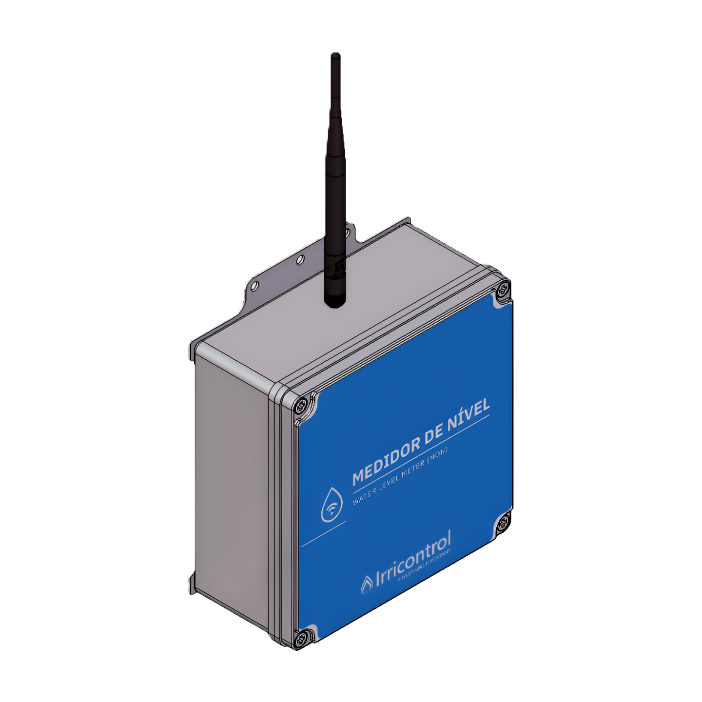
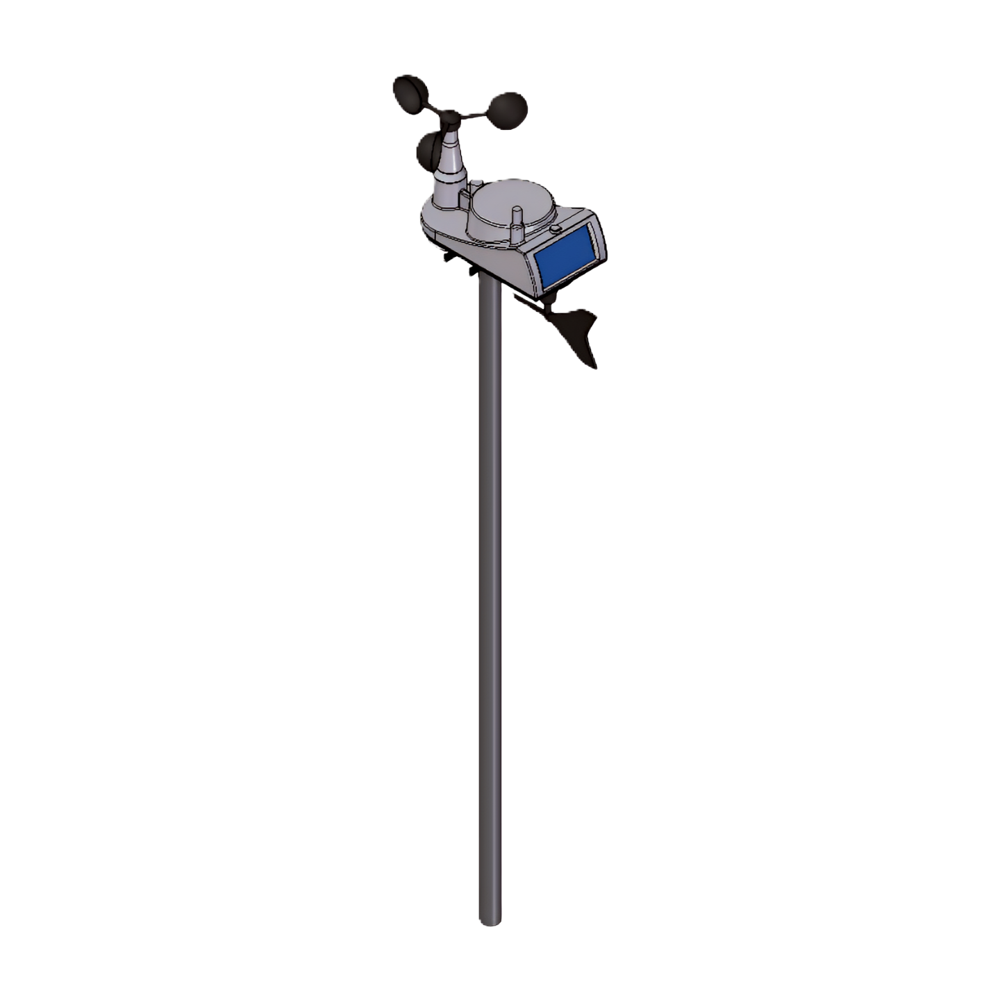
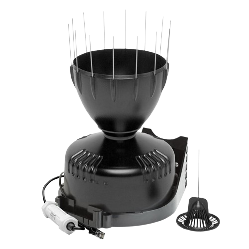

Servidor local offline
Inicie o backend para salvar fazendas.
Equipamentos
Todos
Pivôs
Bombas
Medidores de Nível
Repetidoras
Carretéis
Talhões
Estações Meteorológicas
Período
29/01/2026
→
30/01/2026
Dados de pluviometria
Criar equipamento

SmartConnect ou Nexus
Painéis de controle SmartConnect ou Nexus para controle e monitoramento de pivôs centrais.

SmartTouch
Painel de controle Bauer SmartTouch para controle e monitoramento de pivôs centrais.

Carretel
Carretéis Bauer da série Rainstar com Ecostar embarcada.

Irripump
Painel de controle de bombeamentos para a casa de bombas.

Repetidora
Repetidoras de sinal, solares ou bivolt, para a rede mesh Irricontrol.

Medidor de Nível
Medidor de nível para monitoramento de poços, rios e reservatórios.

Estação Meteorológica
Estações meteorológicas Davis para monitoramento de microclima e acesso à previsão do tempo.

Pluviômetro
Pluviômetro para monitoramento de chuva e precipitação.
Criar fazenda